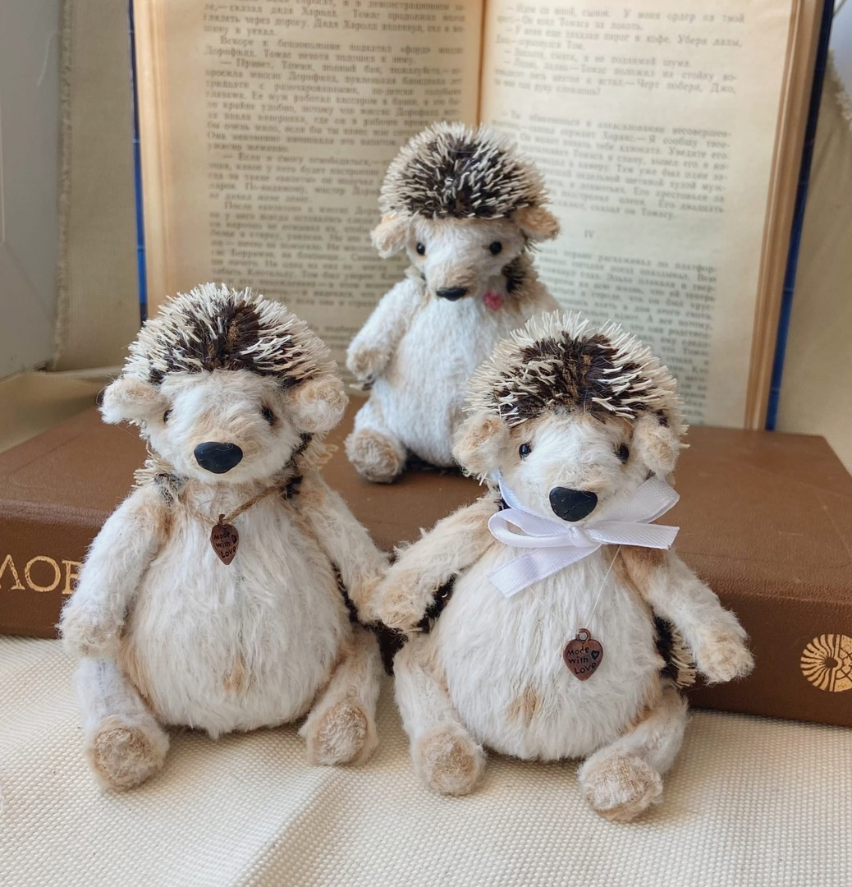

Начало
Рукоделием я увлеклась еще в начальной школе, когда мама записала меня на кружок умелых ручек. Получались игрушки у меня тогда не очень хорошо, были видны стежки, местами вылезал синтепон из-под ткани, но я не сдавлась, наоборот, видя работы своей подруги, я хотела ее обойти в умении. Правда у меня ничего не вышло, я перешла в другую школу и забыла о шитье
Тильда
Спустя год мне пришлось вернуться к рукоделию, так как именно в нём я нашла спасение от ппроблем. Моя подруга предложила вместе записаться на кружок тильды. Преподавательнца старательно нас обучала раскрою и шитью, но и тут я оказалась не в числе лидеров по качеству игрушки, зато я впервые столкнулась с миром тедди, когда Екатерина Борисовна принесла нам свои изделия в этой технике. (Как позже выяснилось, она является достаточно известной мастерицей тедди) В это время у меня случилась самая первая продажа игрушки, созданной моими руками, - кролика Правда сейчас смотрю на его фотографию и понимаю, что таке изделие я бы не купила... На тильде продержалась недолго, из-за отсутствия возможности оплачивать кружок, я перестала его посещать спустя три месяца.
Амигуруми
Более дешевой версией рукоделия оказалось амигуруми, вязание игрушек крючком (нет, у меня было достаточно игрушек в детстве и это не помешательство). Я случайно наткнулась на фотографию игрушки из пряжи, узнала что это за вид рукоделия и решила попробовать. Училась по видео на ютубе, пряжу брала из той, что была дома, так и вышло, что стартовым капиталом были 150р на покупку крючка. Правда и тут мне не хватило усидчивости, чтобы довести дело до конца и начать делать что-то достойное, в своем стиле. Хотя, надо признаться, и тут заиграл во мне предприниматель. Я продала лосенка, зайку и несколько осьминожек на карандаш... Домашних работ становилось все больше и об амигуруми я забыла

Куклы. Часть 1
Бродив на просторах интернета, я нашла фотографию интересной куклы, котоаря показалась мне простой. Тыквоголовки - самая недолговременное хобби. Не найдя хороших бесплатных мастер классов, я обратилась к маме с просьбой посетить платный. Идея ей понравилась и через две недели я, 13летняя девочка, сидела со взрослыми тетями и впитывала информацию. С мастер класса я вышла с прекрасной куклой, которая до сих пор стоит у меня на полке, но сделав еще пару-тройку куколок, я забросила Но буквально полгода спустя я наткнулась на маленьких тыквоголовок, которых ни у кого, кроме Елены Гидневой, не было. Из наиболее дешевых вариантов попробовать себя в подобных изделиях была покупка первой книги Елены, а чуть позже и второй. Спустя малое количество времени я уже сидела на очном мастер классе, благо мастерица была из Ярославля. Вышла я с него с волшебной куклой и в подарок от Елены я получила еще одну выкройку куколки-мухомора. Правда так и не добралась до нее, надо будет сделать
Куклы. Часть 2
И вновь за вдохновением я полезла в интернет, где увидела её, текстильную куклу. Я очень долго искала выкройки, но всё это было безрезультатно. Вскоре я решила попробовать себя на деле и сделать похожую куклу, но по своим эскизам. Вышло смешно, даже тогда я это понимала, но это был шаг вперед, который заметили родители. На день рожденяи я получила онлайн-курс по созданию текстильной куклы. Первая кукла была забавной, но я ее до сих пор люблю, так как у нее прекрасные волосы, которые я сделала сама, расплетая пряжу. Далее куколки получались всё лучше и лучше, одна из них даже переехала в Украину, к родственникам. Впервые я настолько гордилась проделанной работой, что даже подарила одну из них Родители, увидев мое рвение и упорство на пути к созданию кукол всячески поддерживали меня. И вот, наступает 8 марта, и мы всей семьей едем в Москву, так как там я пойду на мастер класс к Татьяне Русан из Беларуси. Мне 15 лет, привезли меня из другого города и зовут меня так же, как дочь мастерицы. Как я поняла, все эти аспекты стали причиной, по которой Татьяна решила подарить мне одну из своих прекрасных кукол К сожалению, и о куклах пришлось забыть в силу подготовки к экзаменам...
Тедди
В этот раз экзамены, первая сессия, наоборот вынудили меня к возвращению к хендмейду. Устав от постоянной подготовки и перегрузке мозга я вспомнила о новом годе, нужно было придумывать подарки, самым сложным был папе. Подумав, я решила, что лучший подарок - сделанный своими руками. Вспомнила о том, что 12 лет назад "Дед мороз" передал мне большого тигра, который и по сей день живет в моей комнате, так что идея подарить волшебнику тигра в ответ не оставила меня равнодушной. В этот раз "без мам и пап" я с отложенных денег купила недешвые материалы и курс по тигру. Дальше меня было не остановить, еще двух тигров я делала на заказ девушке друга и маминой начальнице, затем "разлетаться как пирожки" начали и ёжики, целых 5 штук нашли свои дома, после и фенёк переехал от меня, а за ним и зайчик с лисёнком в италии оказались. А затем была самая большая работа - лев, до сих пор им восхищаюсь...
- 
-